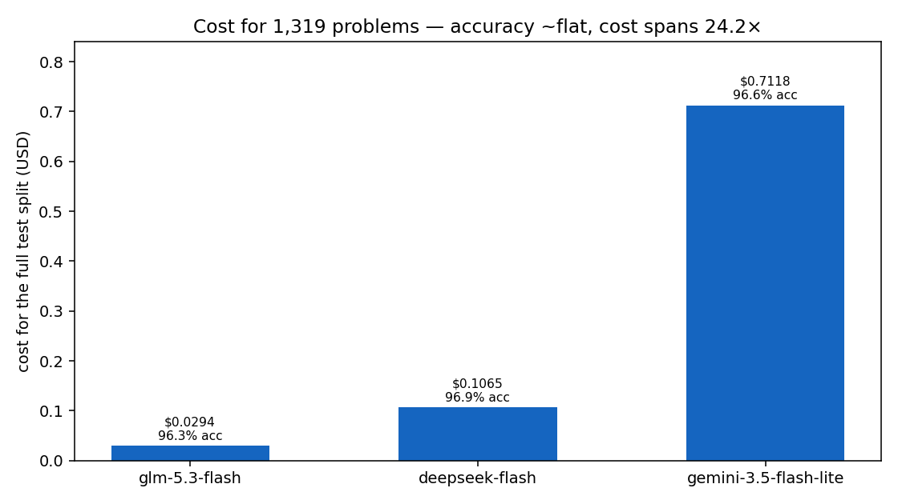
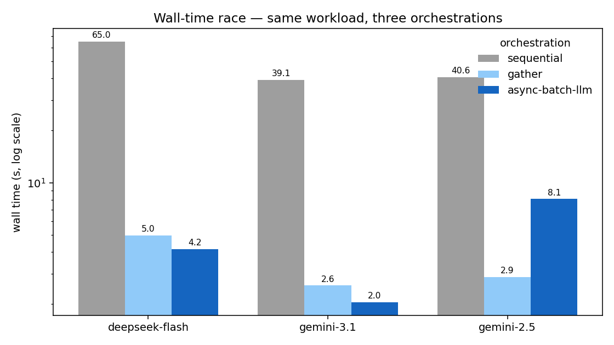
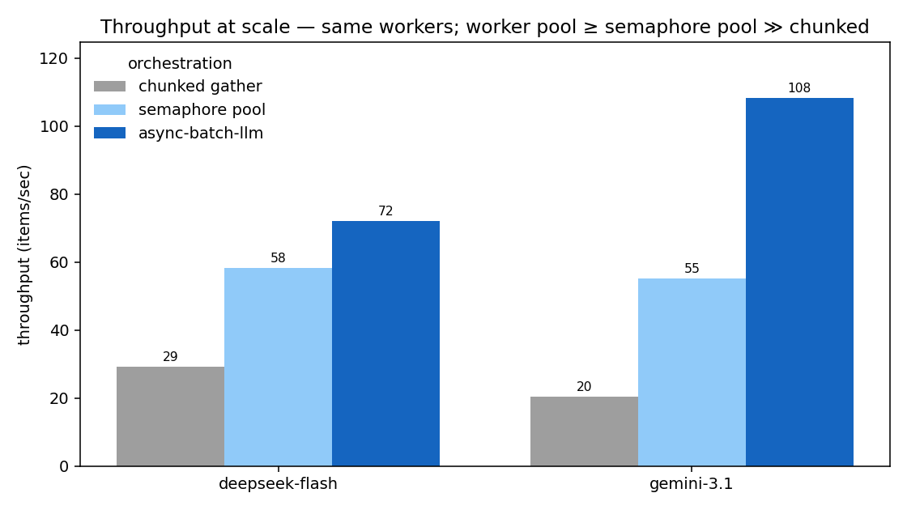
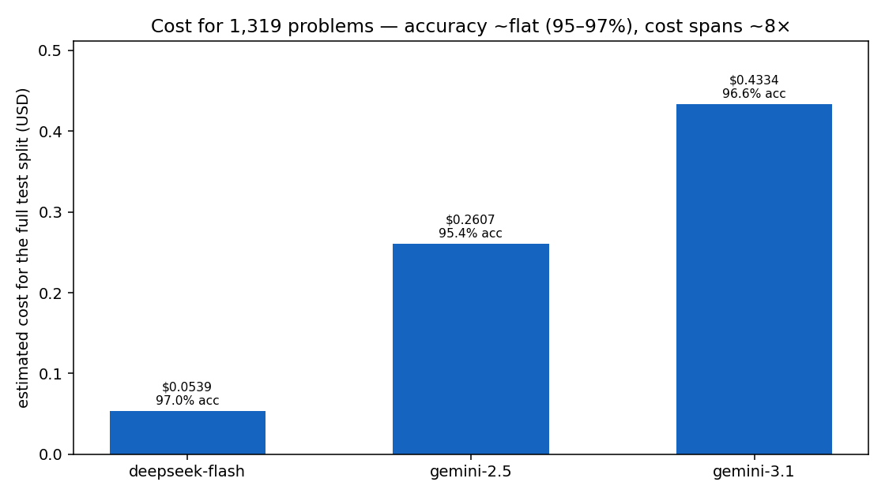

Benchmarks
Two kinds of evidence live here:
- the live-provider GSM8K benchmark below — real API calls, real cost, illustrative throughput; and
- the scale-soak harness — deterministic, credential-free correctness-at-scale evidence (bounded queues, restart, exact accounting) with no live-provider performance claims.
Real end-to-end numbers from the GSM8K bulk benchmark
(examples/example_batch_benchmark.py). For how it's built — the escalation
strategy, the classifier pitfall, gzip streaming, the judge — see the
Benchmark Walkthrough.
Reproducibility
Numbers shift run-to-run with network latency, model sampling, and your account's rate limits — treat them as illustrative, not a spec. Each run has a dated, machine-readable summary so the original and updated bake-offs can coexist without rewriting history.
Latest provider bake-off — August 27, 2026
The latest run replaces the two older Gemini generations with Gemini 3.5 Flash-Lite and adds GLM 5.3 Flash through OpenRouter. It reruns the complete 1,319-problem test split, but skips the separate wall-time and throughput races. The original June benchmark and its orchestration measurements follow this section unchanged.
| Field | Value |
|---|---|
async-batch-llm version |
0.23.0 |
| Dataset | GSM8K test split, 1,319 problems |
| Models | deepseek-v4-flash, gemini-3.5-flash-lite, z-ai/glm-5.3-flash |
| API paths | DeepSeek direct; Gemini Developer API (AI Studio); GLM through OpenRouter |
| OpenRouter route | Z.AI only (provider.only=["z-ai"]), fallbacks disabled |
| Worker pools | 250 for every contestant |
| Run mode | --skip-race; identical prompts, retry policy, and exact-match scorer |
| Pricing snapshot | 2026-08-27; USD per million tokens |
The three batches cost $0.847693 total. No fallback judge calls were needed.

| Provider (model) | Correct | Accuracy | Wall (s) | Input | Cached | Output | Avg out/item | Cost ($) |
|---|---|---|---|---|---|---|---|---|
DeepSeek (deepseek-v4-flash) |
1,278 | 96.9% | 14.5 | 139,093 | 19,968 | 121,384 | 92.0 | 0.106461 |
Gemini (gemini-3.5-flash-lite) |
1,274 | 96.6% | 20.6 | 129,951 | 0 | 269,130 | 204.0 | 0.711810 |
GLM / Z.AI (z-ai/glm-5.3-flash) |
1,270 | 96.3% | 37.0 | 140,753 | 3,456 | 76,291 | 57.8 | 0.029422 |
Three tradeoffs stand out:
- DeepSeek led this run on accuracy and wall time. It answered four more problems correctly than Gemini and eight more than GLM.
- GLM was cheapest by a wide margin. The pinned Z.AI route cost about 3.6× less than DeepSeek and 24.2× less than Gemini, while finishing within 0.6 percentage points of the best score.
- Gemini used the most output tokens and cost the most. Its 204 output tokens per item were 2.2× DeepSeek's and 3.5× GLM's.
The accuracy ordering is not statistically persuasive on this single split. Paired exact tests on the models' disagreements produced p-values of 0.58 (DeepSeek/Gemini), 0.28 (DeepSeek/GLM), and 0.65 (Gemini/GLM). The defensible reading is therefore “approximately tied on GSM8K,” not a durable leaderboard.
Pricing and cost provenance
| Model/API | Input | Cached input | Output | Cost source in this run |
|---|---|---|---|---|
| DeepSeek direct, off-peak | $0.22 | $0.007 | $0.66 | Estimate using the active off-peak tier |
| Gemini Developer API | $0.30 | $0.03 | $2.50 | Estimate using standard AI Studio rates |
| GLM through OpenRouter/Z.AI | $0.075 | $0.015 | $0.25 | Sum of usage.cost from 1,319 responses |
DeepSeek's weekday peak windows double all three rates; this run began outside those windows. See the current DeepSeek pricing and peak schedule, Gemini Developer API pricing, and OpenRouter's live GLM endpoint listing.
OpenRouter normally has permission to select among upstream providers. For a reproducible comparison, the harness sends this on every GLM request:
All 1,319 responses reported Z.AI as the serving provider. The benchmark sums
OpenRouter's per-response usage.cost instead of estimating GLM spend from a
catalog headline. See OpenRouter's
provider-routing controls
and usage accounting.
Reliability result
All three providers completed every item with zero terminal errors:
- DeepSeek: 1,385 attempts, 66 validation retries, and 26 escalations to thinking mode. Every malformed answer recovered within the attempt budget.
- Gemini: 1,319 attempts, no retries, and no escalations.
- GLM/Z.AI: 1,319 attempts, no retries, no escalations, and no routing fallbacks.
DeepSeek's retries were AnswerParseError events from the benchmark's strict
#### <number> output contract, not provider transport failures.
Caveats
- This is one exact-match dataset and one run. It does not measure instruction following, long context, tool use, safety, or quality in other domains.
- The lowest reasoning modes differ: DeepSeek thinking is off, Gemini uses
minimal, and GLM useslow. Gemini and GLM cannot fully disable reasoning for these models. - All models had 250 client workers, but backend capacity, caching, and network paths differ. Wall time is observed end-to-end latency, not pure model speed.
- DeepSeek and Gemini costs are estimates from published token rates. GLM cost is provider-reported and therefore has stronger billing provenance.
The full updated result, including sample outputs, token counts, pricing basis,
and provider routing counts, is in
benchmark-summary-2026-08-27.json.
Original benchmark — June 10, 2026
The original run is preserved below with its wall-time race, throughput comparison, provider bake-off, and contemporary pricing snapshot.
Methodology
| Field | Value |
|---|---|
| Date | 2026-06-10 |
async-batch-llm version |
0.12.0 + this release's pre-merge changes (streaming API, 503 per-item backoff) |
| Dataset | GSM8K test split, 1,319 problems |
| Models | deepseek-v4-flash, gemini-3.1-flash-lite, gemini-2.5-flash-lite; judge gpt-5-nano |
| Worker pools | DeepSeek 250, Gemini 3.1 250, Gemini 2.5 Flash-Lite 5 (throttle-capped — 503s/rate-limits even at 10) |
| Pricing snapshot | 2026-06-01 (USD/Mtok; confirm against each provider's current page) |
| Hardware/network | single client host; results bounded by provider latency, not local CPU |
Estimated cost to reproduce: ~$1–2 total in API spend (full 1,319-item bake-off across three providers + a 1,000-item throughput run + a handful of judge calls), plus ~30–35 minutes of wall time — dominated by Gemini 2.5's ~21-minute bake-off at its 5-worker ceiling, the sequential race leg, and the 60s inter-leg throughput pauses.
Wall-time race
The same 30-item workload run three ways per provider — a one-at-a-time
sequential loop, a naive asyncio.gather, and async-batch-llm — to show how much
concurrency collapses wall time.

| Provider | Workers | Sequential (s) | gather (s) |
async-batch-llm (s) | Speedup (seq→abl) |
|---|---|---|---|---|---|
| deepseek-flash | 250 | 65.0 | 5.0 | 4.2 | 15.6× |
| gemini-3.1 | 250 | 39.1 | 2.6 | 2.1 | 19.1× |
| gemini-2.5 | 5 | 40.6 | 2.9 | 8.1 | 5.0× |
Concurrency collapses wall time (≈16–19× on the unthrottled providers). The race
runs only 30 items, so a 250-worker pool never fills — every call fires at once
regardless of orchestration, which is why gather and async-batch-llm are
neck-and-neck here. Gemini 2.5 is the exception: the framework respects its
5-worker cap (and retried a few transient 503s with backoff), while the bare
gather ignores the cap, fires all 30 at once, and got away with it on this
small batch — so the abl leg trails. That's the throttle ceiling plus the
framework playing it safe, not orchestration overhead. The pool's real advantage
shows up at scale, below.
Throughput at scale
To see what the worker pool buys you once it does fill, --throughput runs a
large batch (1,000 items) three ways at the same concurrency: a chunked
asyncio.gather (per-chunk barriers), a semaphore-bounded gather (continuous
refill — the fair hand-rolled baseline), and async-batch-llm.

| Provider | Workers | chunked gather (it/s) | semaphore pool (it/s) | async-batch-llm (it/s) | RL hits (g / s / a) |
|---|---|---|---|---|---|
| deepseek-flash | 250 | 29.3 | 58.4 | 72.1 | 0 / 0 / 0 |
| gemini-3.1 | 250 | 20.4 | 55.2 | 108.4 | 0 / 0 / 0 |
With zero rate limits on any leg (RL = 0), this is a clean comparison — and
async-batch-llm comes out ahead of even the fair semaphore pool (≈1.2× on
DeepSeek, ≈2× on Gemini 3.1), with the chunked baseline trailing both. Why the
worker pool wins: a Semaphore-over-gather still schedules all 1,000
coroutines up front and lets them contend on the semaphore, whereas the worker
pool runs a fixed N tasks pulling from a bounded queue — fewer tasks, less
event-loop churn, and backpressure for free. It's the optimized version of the
pattern you'd otherwise hand-roll.
Read the multiple with a grain of salt
The legs run back-to-back (with a 60s gap to reset quota), so connection
warmth and ordering can move the exact ratio. The robust takeaway is the
direction: the bounded worker pool is at least as fast as a fair semaphore
pool, and the chunked-barrier baseline is the one that actually loses. And
against a provider that throttles you, the framework is the only leg that
survives it (the RL columns) rather than shedding results.
Provider bake-off
Same framework, one strategy swap per provider, over the full test split.

| Provider (model) | Accuracy | Wall (s) | Input | Cached | Output | Avg out/item | Cost ($) |
|---|---|---|---|---|---|---|---|
deepseek-flash (deepseek-v4-flash) |
97.0% | 18.3 | 131,083 | 17,024 | 135,468 | 103 | 0.0539 |
gemini-2.5 (gemini-2.5-flash-lite) |
95.4% | 1,293.2 | 133,759 | 0 | 618,428 | 469 | 0.2607 |
gemini-3.1 (gemini-3.1-flash-lite) |
96.6% | 43.5 | 129,951 | 0 | 267,258 | 203 | 0.4334 |
Accuracy is 95–97% across all three; cost spans ~8× ($0.054 → $0.43). The cost gap isn't only sticker price — it decomposes into three multiplicative factors, all visible in the table:
- Output price/token — DeepSeek's output rate ($0.28/Mtok) is the lowest here.
- Output length — DeepSeek is dramatically terser: 103 output tokens/item vs Gemini 2.5's 469 and Gemini 3.1's 203, for the same accuracy. Fewer tokens, same answer (see below).
- Caching — DeepSeek is the only provider with cache hits in this workload
(13%), and its discount is steeper (
CachedTokenRates.DEEPSEEK= 2% of normal input vs Gemini's 10%).
Terse vs. verbose: same answer, very different bills
James decides to run 3 sprints 3 times a week. He runs 60 meters each sprint. How many total meters does he run a week? (gold: 540)
DeepSeek — 57 output tokens:
He runs 3 sprints per session, each 60 meters, so per session that's 3 × 60 = 180 meters.
He does this 3 times a week, so total per week is 180 × 3 = 540 meters.
#### 540
Gemini 2.5 Flash-Lite — 185 output tokens (3.2× more, identical answer):
Here's how to solve the problem step-by-step:
1. **Meters per sprint:** James runs 60 meters per sprint.
2. **Sprints per session:** He runs 3 sprints each time he exercises.
3. **Meters per session:** ... 60 meters/sprint * 3 sprints/session = 180 meters/session.
4. **Sessions per week:** He exercises 3 times a week.
5. **Total meters per week:** ... 180 meters/session * 3 sessions/week = 540 meters/week.
#### 540
Across the bake-off that ~3–5× verbosity multiplier — not the per-token price — is the largest single driver of Gemini 2.5's cost over DeepSeek.
Error & retry resilience
The same run, counting what the framework absorbed:
- deepseek-flash — 97.0%, 0 permanent errors, 0 items reaching the judge.
1,328 attempts (9 retries, 2 thinking escalations); 9
AnswerParseErroroccurrences, all recovered on retry. Only provider with cache hits (13%). - gemini-3.1 — 96.6%, a clean run: 1,319 attempts, 0 retries, 0 escalations, 0 errors.
- gemini-2.5 — 95.4% over a rough session at its 5-worker ceiling: 1,439
attempts (120 retries, 41 escalations), with exception occurrences (across
attempts, incl. recovered) of
AnswerParseError=36, FrameworkTimeoutError=29, ServerError=57. Transient 503s are now retried per-item with backoff (not a global cooldown); the framework absorbed the churn and still landed 95.4% with exactly 1 output reaching the fallback judge. A baregatherwould have dropped every one of those 503s/timeouts as lost results.
The LLM-as-judge fired on exactly the 1 item the free regex grader couldn't parse.
Caveats
- Worker counts differ, so "Wall (s)" in the bake-off is not an apples-to-apples speed race — Gemini 2.5 runs at 5 workers (its rate-limit ceiling — hence the ~21-minute wall), the others at 250. Worker count doesn't affect accuracy/token/cost.
- The two Gemini fast passes aren't a matched "no-thinking" setup (2.5's
budget=0is fully off; 3.1'sminimalstill thinks a little) — don't read the 3.1-vs-2.5 accuracy gap as pure model quality. - The throughput multiple has ordering/warmth caveats (see the warning above); the direction (worker pool ≥ semaphore pool ≫ chunked) is the point.
Choosing a provider: beyond cost
Cost and accuracy are the easy axes; for production the data-governance delta often matters more, and can swing the decision regardless of price. The framework makes the swap a one-liner, so pick on what actually matters to you. Verify each provider's current terms — these move.
| Axis | DeepSeek (direct API) | Google (Gemini API / Vertex AI) |
|---|---|---|
| Primary jurisdiction | China | US-based; Vertex offers data-residency regions |
| Train-on-your-API-data default | Verify current ToS; consumer terms have historically been permissive | Paid API/Vertex: not used to train models (per Google's terms) |
| Compliance certifications | Verify | SOC 2 / ISO / HIPAA / GDPR posture via Google Cloud / Vertex |
| Enterprise controls (VPC, audit, DPA) | Limited on the direct API | Available via Vertex AI / Google Cloud |
| Regulatory exposure | Some governments restrict DeepSeek for official use | Widely enterprise-approved |
This table is a starting checklist, not legal advice or a current statement of any provider's policy — confirm against the live terms and your own compliance requirements before committing a workload.
For the updated GLM path, treat OpenRouter and Z.AI as separate services in that review: the request passes through the gateway to the pinned upstream. Provider pinning makes routing reproducible; it does not collapse the two services' data handling, retention, compliance, or contractual terms into one.
The original tables and charts use
benchmark-summary.json and
benchmark-throughput.json. The follow-up
uses benchmark-summary-2026-08-27.json.
Regenerate new dated assets with
uv run python examples/generate_benchmark_charts.py.
Scale-soak harness
benchmarks/scale_soak (v0.21, issue #127 phase one) is the deterministic
counterpart to the live benchmark above: a credential-free, no-network
harness that drives the real process_stream() / ParallelBatchProcessor /
artifact-store code paths with a seeded fake provider and asserts
correctness invariants at scale rather than measuring provider speed.
Scenarios
| Scenario | Exercises |
|---|---|
healthy |
Lazy bounded streaming, SQLite checkpoint batching, clean close |
slow_consumer |
Result-queue backpressure reaching (never exceeding) its bound |
rate_limit_wave |
Coordinated 429 cooldown without a retry storm — provider-call count is asserted exactly |
transport_retry |
Deterministic 5xx/connection first-attempt failures through the production retry path |
validation_recovery |
Per-item RetryState feedback with cross-item isolation asserted, failed-attempt tokens retained |
stop_resume |
Category fail-fast stop, then REUSE_SUCCESSES restart with replay-call elimination |
artifact_bench |
SQLite append/reopen/lookup/iteration throughput, WAL plateau and close-truncation, JSONL comparison at a safe size |
progress_overhead |
Bundled reporter renders bounded by time, not item count |
token_quota_mixed |
Real streamed RPM+TPM waits, mixed estimates, refunds/debt, known-zero/unknown retries, and two quota scopes |
Running it
make scale-smoke # ci profile, ~15 s, runs in CI on every PR
make scale-100k # 100k reference profile (minutes)
make scale-1m # 1m profile, large-scenario subset (long)
uv run python -m benchmarks.scale_soak --help # every option
Profiles: ci (~2k items/scenario), 100k (all scenarios — the release
approval run), 1m (healthy, slow_consumer, stop_resume, artifact_bench),
custom (--items). A manual workflow_dispatch workflow
(Scale Benchmark) runs the large profiles on GitHub-hosted runners and
uploads reports as artifacts.
Report schema
Each run writes one versioned JSON document
(schema_name: async-batch-llm-scale-soak, schema_version: 2) containing
UTC generation time, environment (package version, git revision, Python,
platform, CPU count, resource-probe methods — never hostnames or home
paths), the complete effective configuration, per-scenario counts,
throughput, provider-call and queue high-water measurements, quota estimates,
reservation/reconciliation totals, bounded wait percentiles and per-band
fairness, bounded resource samples, artifact/WAL measurements, every assertion with its
evidence, and caveats. Unavailable metrics are null, never fabricated
zeros. Exact item accounting uses an order-independent XOR-of-SHA-256 digest
plus independent count and modular index-sum cross-checks, so a million-item
run proves no loss or duplication without retaining IDs.
Dated results policy
The reviewed v0.22 scale evidence records the
completed 2026-08-17 full 100k profile and the exact 1m healthy scenario,
including revision, environment, report hashes, quota reconciliation totals,
and explicitly unrun 1m scenarios.
A profile's existence is not a scale claim. Reference numbers are published
in the docs only after a maintainer actually completes that run and reviews
its report; reports land in benchmark-results/ (gitignored) or as CI
artifacts until then. The harness's fake-provider throughput reflects
framework overhead only — it says nothing about live-provider latency,
quotas, or cost. The mixed-token scenario proves local integration and bounded
accounting with a deterministic fake provider; it does not reproduce every
provider quota window or measure active GPU sequence/KV-cache capacity. The
report's deferred_features list records remaining exclusions such as adaptive
concurrency #89, distributed writers, provider-native batch APIs, and real
provider quotas or pricing.